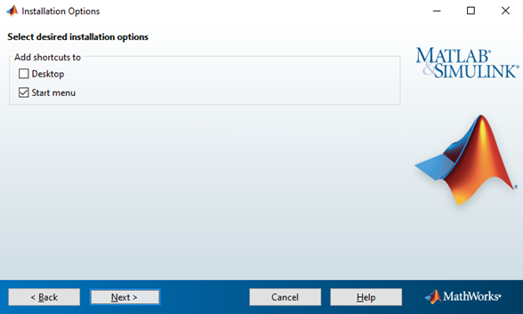

설치 옵션 지정
설치할 플랫폼에 따라 여러 가지 설치 옵션을 지정할 수 있습니다.
Windows
MATLAB®을 시작할 수 있는 바로 가기를 Windows®의 시작 메뉴나 바탕 화면에 둘 수 있는 옵션이 설치 옵션 대화 상자에 제공됩니다.

설치 옵션을 선택한 후 다음을 클릭하여 설치를 진행합니다.
Linux
Linux 시스템에서 matlab과 mex 스크립트에 대한 기호화된 링크를 만들 것인지 여부를 지정할 수 있습니다. 설치를 진행하는 사용자에게 쓰기 권한이 있는 폴더이면서 모든 사용자의 경로에 공통으로 존재하는 폴더를 지정합니다(예: /usr/local/bin).
설치 옵션을 선택한 후 다음을 클릭하여 설치를 진행합니다.